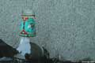
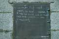

|
|
Being of that generation that calls itself shifty and aimless – since I'm in my early twenties – I know all about the 1960s. I've seen Easy Rider and it was about two guys on motorcycles.
Any Chicago resident worth his salt knows about the 1968 Democratic Convention: the one where the political outcome was forgotten, and all that remains are memories of riots. Even our publisher – himself in his twenties – told a story about his father at the convention. Apparently the police had taken a disliking to the fact that he had climbed a stop sign, and two officers dragged him off.
Like I said, I know all about the ‘60s.
Remember that all the places described herein are real. Also remember that during the protests against Vietnam at the intersection of Michigan and Balbo, just east of the Loop , guards stood on bridges with .30-caliber machine guns, barring crowds from continuing. Remember that when officers were ordered to clear the streets , demonstrators were clubbed and beaten. What happened then was serious, and deserves our attention and respect.
What happens in the same intersection now is ripe for ridicule. As always, there's a 10-point scale. Ten is good. One is bad. |
|
|
01. Expensive residences I could never afford: 7.9
On the northwest corner, there's a building that has no apparent way in. There's scaffolding all around it, so I'm guessing there's some sort of restoration project going on. The sign out front tells me the edifice used to be the site of the Blackstone Hotel.
This is where I'm glad I live in the Internet Age. Putting “Blackstone Hotel” into Google gives you a wealth of information – that it used to be the “Hotel of Presidents”, hosting Woodrow Wilson, Teddy and Franklin Roosevelt and JFK, among others – and that, when traveling to Chicago, you can stay at the prestigious Blackstone Hotel. The total number of rooms available and the total number of floors both equal zero, since the place has been closed for a good number of years, but the reservation line is accepting all major credit cards.
The tagline has changed from the “Hotel of Presidents,” which has a dignified air to it, to “A royal residence for those who value life and success,” a line with just a tad more snootiness to it. Renovations are still continuing, so no one lives there yet. Since prices range from $3.4 – 8.5 million for 4 – 11,000 square feet of space, I don't know if anyone will anytime soon.
606 is thinking of putting its offices in there. Donations now accepted .
The score? Since I can't afford to live there, I had to dock some points. But the sign on the sidewalk – Caution: Falling Ice and Snow – was pretty hip. So more points there. |
| |
|
|
02. Unlocked booths that should be locked: 6.5
I have no idea what it's used for, but on the northeast corner of the intersection, there was a four-foot by four-foot square booth. And the door, which had a heavy lock, was ajar. This was the moment I'd been waiting for! Finally, I was going to realize my true calling of sitting in a wood-and-glass box, doing, well, nothing really, and getting paid for it. Those student loans would be justified after all.
Inside the booth were a folding wooden chair, a dirty broom, a green spray bottle, a roll of masking tape and other miscellanea. Notes tacked to the wall were dated 2001, and it looked as if no one had been inside since. But the real discovery was the switches, the heavy kind used for stadium lights, or power grids , or … traffic signals, maybe?
You know what I'm talking about: a big metal box, with a handle on the right side that pulls down like a slot machine, and the words “on” and “off” clearly labeled. But every other time I had encountered one of these contraptions, there's a padlock through the security hole, ensuring it can't be switched off. That padlock was missing. If you're feeling frisky, there's an unlocked booth on the corner of Michigan and Balbo that has unlocked switches. I didn't tell you what to do, and I don't condone any illicit behavior. I'm just saying, you know.
Interesting side story: While I was checking out the aforementioned kiosk on the corner, a blue beater Chevy pulls up to the light, and was waiting to make a right turn on Michigan . Uneventful in itself, what made me take notice was that the occupants yelled out to me, “Hey, what you doin'?” when I was obviously writing things on a notepad for 606 Magazine, standing on a corner. But what made the scene even more worthwhile were the spinning rims . I thought those were just an urban legend. I don't even have a car and I'd love to have spinning rims. I should get them on my backpack, so they keep going even when I stop walking. I think I'll do that.
Had I pulled the switches and nothing horribly bad happened, the score would have been higher. As it stands, though, I didn't want to go down in history as the guy who caused the next Chicago Fire, so my curiosity had to remain unsatisfied, as did the score. |
| |
|
|
03. Opulent ballrooms with 1,302-person capacities: 3.2
I was about to enter the lobby of the Hilton Chicago, when I was stopped by a little person with a voice made of sand and gravel :
Him: “Hey, let me have a few minutes of your time.”
Me (an intrepid reviewer, always on the lookout for stories) : OK.
Him: “I work for the Jesse White Tumblers … ( interjection: the Jesse White Tumblers rock. No joke. I was very intrigued.) … and … ( unintelligible mumbling, to my disappointment ).”
Me: What?
Him: “Look, you have any spare change?”
This is not the sort of interaction I expected outside the Hilton.
And with that, I walked into the Hollywood of yesteryear. The opening foyer was something directly from Sunset Boulevard, in Norma Desmond's opulent mansion, but without the Austrian silent-film directors walking around. The carvings and the marble and the carpet and the statues and such. Wow. The place gets style points. So I wandered about, determined to spend some time in a room 50 times the square footage of my apartment.
I found the ballroom. It was empty. By “empty” I mean “it didn't have any people in it,” not “there weren't 12 chandeliers and individually-painted alcoves spanning the length of its 100-foot walls”. Pulling from my deep knowledge of unfounded stereotypes, I always knew rich people were snooty, preferring to discuss the ins and outs of a 1983 Bordeaux and blue-chip stocks rather than last night's game over a beer, but this room changed my mind with one strategically placed object: a disco ball . Right in the middle of the room, between chandeliers bigger than my shower, hung a mirrored disco ball. I can only imagine the coke-fueled party mania that these society parties become after-hours. Rich people are cool.
But the whole thing didn't gibe with my mental projection of what a ballroom should be, so I had to give it a bad score. Gotta keep it real. |
| |
|

|
04. Malt liquor bottles on public art installations: 1.4
The intersection itself has an interesting flavor, as the west side of Michigan is developed buildings and the east side is open, giving way to Grant Park . It's a nice shift in the cityscape. Grant Park has flowerbeds and walkways and impressive Art Deco statues. One in particular, dedicated to the memory of a famous music patron of the nineteenth century whose name escapes me now, stands as a testament to the beautiful and the pursuit of higher knowledge.
The statue, ostensibly Erato the muse, depicted with a lyre, is topless. I don't know about you, there's something sublime about a Greek mythological figure lamenting my departure from this world while celebrating my legacy. The nudity just doesn't hurt. Attorney General John Ashcroft, famous for his use of $8,000 of taxpayers' money to cover an exposed breast, would have a field day. This is what happens when the Justice Department gets involved.
But the best part of this foray into the park was, by far, the empty malt liquor bottles sitting on the carved marble. One was Steel Reserve, which I've heard of, but not yet had the pleasure of drinking, and the other was something called Crazy Horse Malt Liquor.
Were I on a scavenger hunt, and I had just one last thing to go after getting Mayor Daley to sign my left bicep and collecting Chinese therapy balls from the South Side, I would give up. I have literally no idea where to find a bottle of Crazy Horse Malt Liquor. Can't say that I want to, either.
The low-quality 40 on the marble killed the score. Otherwise, there's a topless statue and some green space, which is rare in a city. Had the 40 been from a reputable brand, like King Cobra or Old English, the score would have been much, much higher. |
| |
|
 |
05. Profanity-laced service door covers: 5.4
According to the malt liquor-Greek statue phenomenon, public places, then, have their own style and cannot be made to fit just one purpose. That being said, I present the following:
Go away, fuck you … money, you prick. I win, you loose[sic], look at yourself. Fuck your society … this is freedom!
And there you have it. I was minding my own business, walking up the stairs from the garden area to see what was happening on the street level, and there I found this missive from the heavens. Had I known that some years back, that horrible decision I made involving a large sum of money, a trip to Vegas and a roll of duct tape would never have happened. The stock market crash of 1929 would never have happened. In fact, just about every major violent or horrible incident in recorded history could have been averted, had just the mellifluous words written on a service door in chalk been kept in mind.
Its only drawback is the medium's impermanence. Chalk, as any schoolchild can tell you, lasts two rainfalls and that's about it. Otherwise the score would have been higher.
In closing.
Chicago needs its green spaces, ones that can be seen from the “permanently unobstructed views of Lake Michigan,” as the guidebook for residences say. What that same guidebook doesn't tell you is that all that green space lends itself nicely to a riot atmosphere. So given the historical impact of Michigan and Balbo, I award the intersection eight points. Given the fact that I saw spinning rims, I give it one point. Given the fact I saw a pair of jeans balled up in a tree, I take away four.
Like any good reviewer, I'm completely arbitrary. Final score: 7.6. |
| comments: intersection section |
|
subject: spinning rims
date: 03.06.2004
name: C.Taylor
comment:
love this.
ctay |
| |
subject: malt beverages
date: 03.11.2004
name: Lisa Chieco
comment:
Marrying and old guy with a master's in geography didn't really prepare me for the geographic survey of malt beverage bottle disposal. However, I did join in the fun readily and unlike those of you with too much caution for your own good, I both located a vendor and TASTED the most popular brew around the Clay Wade Baily bridge in downtown Cincinnati. It was Snake Eyes and from the many florescent flavors available I chose "orange." One heady sip and I was instantly transported to my youth. Orange Super Sugar Crisp! Shortly I was just as nauseated as if I had eaten an entire bowl of that disgusting cereal just because I liked the hip bear in a turtle neck on the box. I have to admit, nobody else in my geographic survey party was brave enough to try the swill but I encourage you, for the sake of your art, to locate a vendor (probably a Mom and Pop store near the park where the bottles are pictured) and try the most popular brand. Through this kind of investigative reporting we can truly bridge the gaps society imposes.
|
| |
subject: You are Grrrrreaaaatt!!!
date: 03.18.2004
name: Susie Q
comment:
Like Tony the Tiger said. Love this article...you and the staff are very talented...but I guess you probably already knew this ;) And the spinnin' rims on the backpack...classic, baby! |
| |
subject: Jesse White Tumblers
date: 03.18.2004
name: prufrock
comment:
The unintelligible mumbler seeking "a few minutes of your time" might indeed work for the Jesse White Tumblers:
http://www.kccougars.com/promotions/actstumblers.html The Tumblers inform us that "The gravity switch is now in the off position."
I like to take myself lightly too, avoiding that antithetically grave position. Perhaps that is why I eschew Steel Reserve 211 High Gravity Lager:
http://www.40ozmaltliquor.com/steelreservehg.html
Long live the section on intersection! |
| |
subject: intersected
date: 03.21.2004
name: Jack Binyon
comment:
This story is not mellifulus in the least. You do well in weaving the strands of complicity with personal and historical fact. You are tripping out.
|
| |
| |